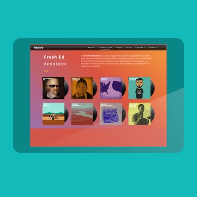

MusEDLab ran Open University pilots earlier in 2026. An upcoming Rengongfu workshop on 17 October 2026 will bring together 10 teachers to try music education tools and co-design learning activities, as part of a potential 25-teacher pilot.
Learning & co-design
Creative Learning Workshops
The NYU Music Experience Design Lab (MusEDLab) has offered a series of immersive workshops that blend music, technology, and creative learning. These workshops empower students, teachers, and the broader community through interactive, co-designed experiences. Below is a selection of our featured workshops, locations, collaborators, and highlight activities.

2026 pilots
Workshops Offered
- Yungu School – Hangzhou, China: Multi-year creative learning partnership featuring Scratch, Groove Pizza, and student-led coding/music projects. Emphasis on co-design with local teachers and students.
- Carnegie Hall – Family Day Program: Collaboration with Weill Music Institute using Groove Pizza and Fresh Annotator. Fresh Annotator video.
- Singapore Ministry of education: Sessions exploring Soundtrap, Makey Makey, Scratch, Chrome Music Lab, and culturally responsive tools. Hands-on digital music making and design thinking.
- National Music Library of Greece - Athens: Summer workshop including Scratch storytelling, student presentations, and musical game creation. Featured Scratch, Groove Pizza, and Chrome Music Lab.
- Cromaine Library – Michigan: Youth and community DIY musical instrument projects using Makey Makey and recyclables. Soundtrap and Scratch used for digital creation.
Common Tools Used
- Groove Pizza – Visual drum sequencer using shapes and patterns
- aQWERTYon – Musical keyboard with pitch scaffolding
- Scratch – Visual programming for music and storytelling
- Chrome Music Lab – Music learning tools and sound experiments
- Soundtrap for Education – Cloud-based DAW for collaborative music
- Makey Makey – Interactive music-making with conductive materials
- Fresh Annotator – Hip-hop lyric annotation tool by MusEDLab
Pedagogical Themes
- Creative coding for musical expression
- Equity-centered design thinking
- Learning by making and co-design
- Cross-cultural collaboration
- Inclusive and accessible music technology
Videos and Media
